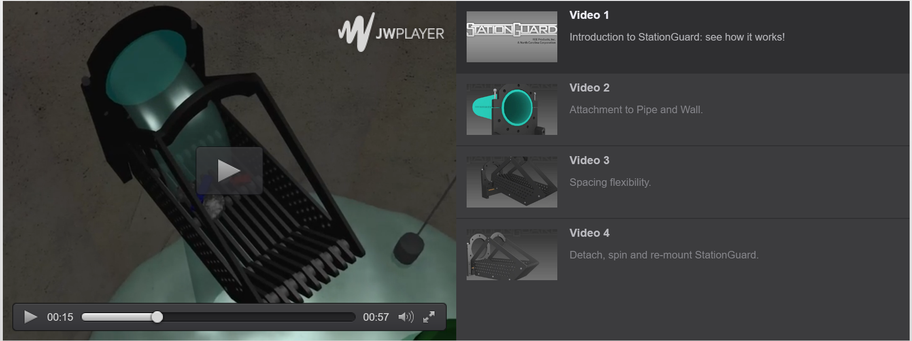

StationGuard: An REE Innovation
What problem does StationGuard solve?
The development of the StationGuard (a patent-pending invention) began with my frustration with having to replace pumps multiple times. Inorganic materials such as golf balls, toys, clothing, diapers, and even rocks, often enter lift stations and damage pumps, which are difficult to reach and expensive to repair. Having visited hundreds of lift stations since 1989, I began to concieve of a solution. StationGuard is the answer to keeping out materials that can damage or destroy pumps, saving valuable time and money.
What does StationGuard do?
StationGuard attaches directy onto each waste stream pipe (see Video 2 below), either inside the lift station or at the plant. It could even be used in a manhole sitation. View the videos below to see the StationGuard in action.

Once StationGuard is installed, the operator can maintain the removable bar screen from atop the lift station or waste treatment plant. StationGuard's patent-pending mounting cradle allows for quick and easy removal and reinstallation (see video 4 above). Within minutes of installation, your pumps will be protected like never before.
What are the StationGuard's specs?
The StationGuard fits around PVC, SDR, DI, IP, AC, or CP pipes. It can also be wall-mounted.
StationGuard comes in two diameters: to fit 4"-8" pipes and to fit 10"-20" pipes. Special sizes are also available. It can be easily adjusted in the field to screen at two mesh widths: 1/2" and 1" (see Video 3 above), depending on the size and nature of the objects you are trying to catch. It is lightweight and made from non-conductive materials.
Please contact us today at 919-270-4831 or Send a message.